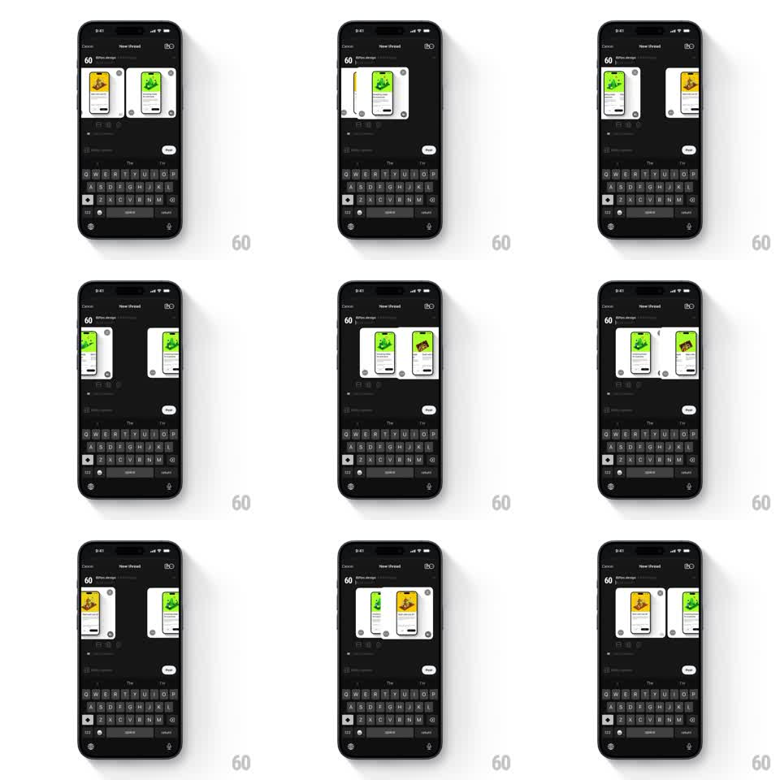

Media
Frame-by-frame

Rebuild this interaction 1:1: Threads' composer media reorder - long-pressing an attached media card lifts it, and dragging reorders the row as sibling cards slide aside to make room, dropping into the new position on release.

Rebuild this interaction 1:1: Threads' composer media reorder - long-pressing an attached media card lifts it, and dragging reorders the row as sibling cards slide aside to make room, dropping into the new position on release. ## Integration Integration: stack-agnostic spec - springs given as stiffness/damping, timed motions as duration + curve; map every value to your framework and animation library of choice. ## Scene Dark "New thread" composer: Cancel / New thread header, avatar and "60" count, a horizontal row of attached media cards (rounded thumbnails with small remove badges - a yellow dog card, a green card), text area below, keyboard docked with a muted "Post" button. ## Motion spec Pattern: drag-to-reorder media row, gesture-driven. - Lift: long-press raises the card (scale 1 -> 1.06, shadow grows, 150ms) with haptic. - Drag: the card follows the finger 1:1; when its center crosses a sibling's center, the sibling slides into the freed slot (spring ~360/24, 200ms). - Drop: release settles the card into the new slot (spring ~340/22, scale back to 1, 200ms). - Remove: the small badge per card fades the card out (200ms) and the row closes ranks (200ms). ## Calibration - Reordering is live - siblings shift during the drag, not after release. - The keyboard and composer never move; only the media row reflows. ## Reduced motion Cards swap with a 200ms crossfade on drop; no live shifting. ## Don't miss - The lifted card keeps its remove badge visible while dragging. - Cards stay within the row - dragging vertically just lifts, it never detaches into free space.